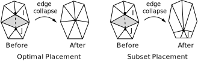

RDEC, Option,
REDUC,
--,
Nplace
Defines the decimation parameters used by the radiosity solver
method.
OptionCommand options:
DEFINE | — | Defines the decimation parameters (default). |
STAT | — | Shows the status/listing. Other command options are ignored. |
REDUC Approximate reduction in the number of surface elements. Valid range is from 0.0 (no decimation, the default) to 1.0. This number is a factor applied to the initial number of element radiosity surfaces.
--Unused field.
Nplace Node placement algorithm
OPTI | — | Optimal placement. An edge is collapsed by moving both nodes (I and J in the figure below) to a new location. |
SUBS | — | Subset placement. An edge is collapsed by moving one node to another one. In the figure below, node I is moved to node J.  |
The RDEC command sets decimation parameters. These parameters are used by the next RSURF command to generate radiosity surface elements.
Decimation is the process of simplifying a fine surface mesh into a coarse one. This process is accomplished by a sequence of edge collapses.
The maximum degree of decimation (1.0) is unreachable. The real degree of decimation is always less than 1.0 because the decimated mesh must always consist of at least one element.